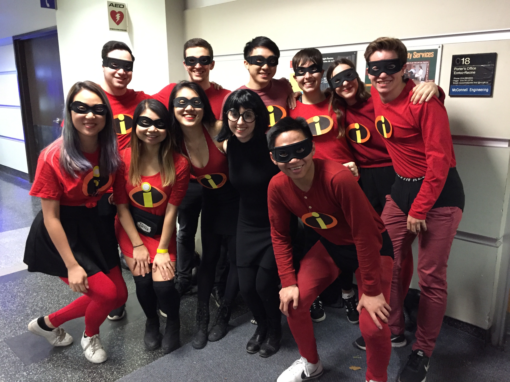
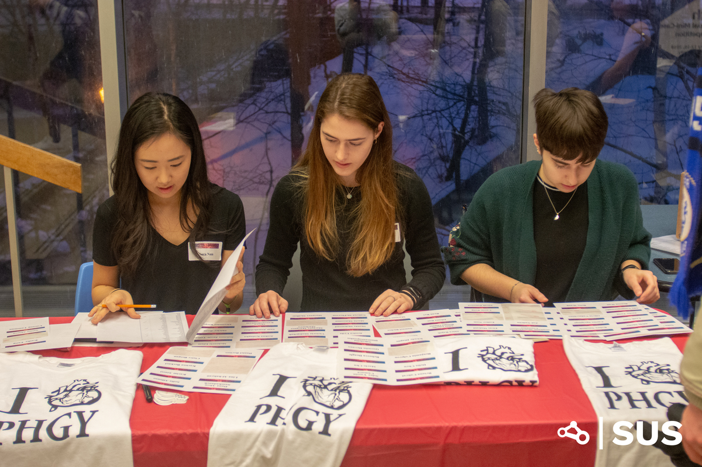
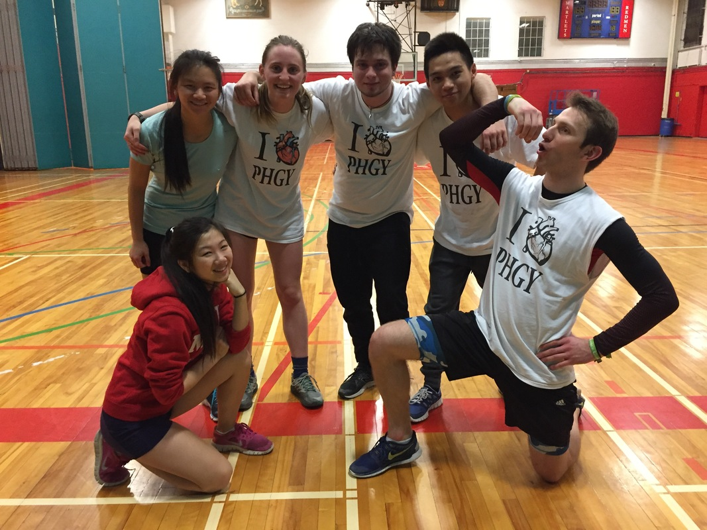

Physiology Undergraduate League of Students
Welcome
Since its inception, the Physiology Undergraduate League of Students has been the elected student society at the service of undergraduate students in the Department of Physiology at McGill University.

PULS 2018-2019 Council

U2 Axe Throwing
- 
Crawl-o-Ween
- 
Physiology Career Day

Cocktails and Conversation with Dean of Science

Flag Football

First PULS Meeting

U2 Axe Throwing

Apple Picking

Physiology Career Day

Cocktails and Conversation with Dean of Science
- 
Intramural Dodgeball

PULS 2018-2019 Council

U2 Axe Throwing

U1 Breakfast

Physiology Career Day

Cocktails and Conversation with Dean of Science

Flag Football

PULS Retreat

U2 Axe Throwing

U1 Pumpkin Carving

Physiology Career Day

U3 Ceramic Cafe
PULS Elections 2019-2020
PULS election season is here! Before voting for your 2019-2020 executive council, be sure to read the candidates' platforms below!
All students registered in a Physiology undergraduate program are eligible to vote. This includes Liberal/Major/Honours Physiology, Joint Physiology and Mathematics, Joint Physiology and Physics and Interdepartmental Honours Program in Immunology
The positions being filled are: President, Vice President, VP Finance, VP Internal, VP Academic, VP Athletics and Publicity, U3 Reps (x2) and U2 Reps (x2)
Voting opens March 25th at 10:30 am and closes March 29th at 11:59 pm. Students can vote online using the secure and confidential SSMU Simply Voting system Please vote: it only takes 30 seconds to make your voice heard!
Candidates
Sakiko Ohashi
Candidate for President

Hello PHGY+IHI! My name is Sakiko Ohashi and I am honored to announce my candidacy for the position of President in the 2019-2020 PULS election! Having the privilege to be a part of PULS as VP Finance this year and as a U1 Representative the year before has been a rewarding and humbling experience, and I would love to have the opportunity to be your next President.
Some goals I would like to achieve if elected include the following:
Connections with the department
- Although the department has our best interest in mind, they may not always be aware of the needs and wants of the students. I would take the initiative and effort to better connect with the administrative department, for more efficient and transparent processes on various projects.
- I believe that sponsorships play a key role in the success of many of PULS’s endeavors throughout the year. That being said, I would like to find and recruit more sponsors should I be elected; this would not only potentially increase our budget but would additionally increase connections and opportunities for students.
- I would love to continue spreading the inclusive and all-welcoming community PHGY brings by expanding the depth and breadth of events PHGY has to offer. This would include, but are not limited to: more academic events, increased presence of the Synapse program (U1-U3 mentorship program), hosting more and new social events, as well as collaborating closely with the VP Finance to increase the budget for our events to allow for a higher quality in the provision of services.
Thank you so much for your time and consideration!! Voting will take place online between March 25th and March 29th—don’t forget to vote!
Jamie Halperin
Candidate for Vice President

Hey PHGY! My name is Jamie Halperin and I’m thrilled to announce that I am running to be your Vice-President in 2019-2020!
- Experience and Leadership -
For the past two years, I have been integrally involved in the Physiology community through PULS, serving as a U1 Representative in 2017-2018 and then as Communications Director this year. Being on PULS has been incredibly rewarding, and I would love to continue advocating for PHGY/IHI students next year. Furthermore, I hope to use my experience (for example in event-planning, coordinating NTCs, managing the PULS Facebook page and designing the PULS website) in a leadership capacity to help other PULS members bring their visions to life more effectively.
- Community and Inclusivity -
Making all PHGY/IHI students feel involved in the community and equally welcome to PULS events would be one of my top priorities as VP. Nepotism has been an issue across many departmental and faculty councils at McGill, and unfortunately PULS has been guilty of it at times. Getting tickets to a dance or a spot on the Science Games team should not be made easier because you are on PULS or close friends with a PULS executive. As elected representatives of a large student body, I believe PULS executives should strive to make events equally accessible to all PHGY/IHI students. We are all best friends!!!
- Interdepartmental Collaboration -
In my experience, the most successful initiatives always come from collaborating with other departments. As VP, one of my main responsibilities would be attending SUS General Council meetings. I plan on using this opportunity to facilitate communication between PULS, SUS and other departmental councils to promote the planning of interdepartmental events, with the goal of helping PHGY students feel more comfortable seeking out experiences beyond the Physiology department.
Thank-you for your consideration!
Anna Zarzycki
Candidate for VP Finance

My name is Anna Zarzycki, and as you may know, I had the pleasure of serving as U1 rep on PULS this year!
Our current VP Finance has done an amazing job of garnering a surplus of funds, giving PULS the ability to create amazing events for our students. If elected, I aim to continue this track record of responsible fund management and budget allocation so that each Physiology student has access to all the resources and tools necessary for an amazing undergraduate experience and bright future.
As U1 rep, my predominate responsibility is to the U1 students; creating events to build a sense of community and reach out to as many incoming Physiology students as possible. As VP Finance, I will bring the same attitude on a larger scale; ensuring that PULS funding goes back into its student body.
I aim to improve the financial awareness of each PULS member by providing continual information and a specific breakdown of how funds are spent for each event, which will also allow for the reallocation of unused funds and increase accountability.
I also hope to build sponsorships with external organizations and take advantage of various SUS resources, such as SSIF and SPF funding, both which will allow for financial support of recurring and new events designed for our students.
Outside of PULS, my leadership position in managing a federal not-for-profit and developing partnerships and promoting responsible fund management provides me with skills which make me an ideal candidate for the VP Finance position.
My extensive knowledge of the inner workings of PULS, particularly the current use of funds, will allow me to continue to invest in our student body to our maximum ability.
It’s an honour to be given this opportunity, and I look forward to working with PULS and all Physiology students!
Sara Nam
Candidate for VP Internal

Hi PHGY/IHI! My name is Sara and I’m very excited to be running to be your VP Internal for 2019-2020.
This past year, I had the great opportunity of serving as PULS Charity Director, and I am enthusiastic about continuing to serve the physiology student body. My goal as VP Internal is to foster a welcoming community by hosting a variety of events throughout the year, ranging from U1 Welcome Breakfast to year-end semi-formal.
If I were elected, my primary focus would be to accomplish the following goals:
1. Provide a wider variety of events:
- To engage Physiology/IHI students in social, mental and academic aspects of student life, I will be collaborating with the other council members – specifically UReps, VP Academic, and VP Athletics – to provide a larger variety of events available throughout the year, ranging from stress-reducing workshops to PHGY Olympics. I believe that by increasing the diversity of events, the student community will be strengthened by reaching the interests of a greater number of Physiology/IHI students.
- We have Physiology/IHI students from all over the world, from all different walks of life, and I believe that it’s important to celebrate our diversity and develop a community built on respect. I hope that by focusing on event accessibility, I can help to ensure that people of all different backgrounds are accommodated. I aim to promote safe and welcoming environments at all events by enforcing zero tolerance towards actions that may be considered discriminatory in any regard.
- One of my priorities is to host successful interdepartmental events. To ensure that each event runs smoothly, it will be essential to improve communication within the department, and between other departments within the faculty. To do so, I would maintain strong relationships with SUS and other science councils.
Camille Zeitouni
Candidate for VP Academic

Hi PHGY FAM! My name is Camy Zeitouni and I am so excited to announce that I am running to be your VP Academic on the Physiology League of Undergraduate Students next academic year.
After serving on PULS as U2 Rep and living through U2 physiology I have acquired a lot of experience on what it means to be a physiology student and the issues that we face academically.
My main objective next year is to increase the communication between PHGY students and the physiology department. Two ways I will do this is by providing professors with many feedback forms (feedback on midterms, quizzes, finals, course structure) and by trying to start a student-professor committee to have discussions on the different issues faced not only by students but also by teachers so that we can come up with progressive solutions.
Secondly, I would like to promote to make small improvements in the PHGY classes to make them less stressful but just as educational. Some of my ideas to do this is by increasing the time allotted for the PHGY313 quizzes, having the weight of the PHGY209/210 quizzes be taken from the final and not the midterm and as well having practice problems provided to students for PHGY311.
Lastly, I want to make a point next year to talk with students and learn about the real issues they face so that I can be the best advocate for them as I can.
If you have any questions, concerns and ideas please send me a message (camille.zeitouni@mail.mcgill.ca). I would love to hear from you!
Nasri Balit
Candidate for VP Athletics and Publicity

Hey PHGY+IHI!
I’m Nasri Balit and I’m running to be your VP Athletics/Publicity. I really enjoyed my role as a U2 representative this year and am excited to continue contributing to a more well-rounded student body.
It’s a fact that our program, and university, can be demanding. As a result, we tend to prioritize our studies and social lives over our well-being. Unfortunately, this usually includes exercise, which I’ve also been guilty of throughout my U2. My main goal as VP Athletics is to change that and improve your overall well-being!
To do this, I have 3 strategies:
1. Physical Well-Being:
- As VP Athletics, my role would be to ensure your physical health remains in prime shape as you make your way through Physiology. I will do this by organizing new initiatives, like hosting sports matches against other departments to improve interdepartmental relationships, and building upon old ones currently in place, like sunrise hikes up Mt. Royal. As midterms/ finals draw near, I’ll also work with UReps to incorporate quick and easy workouts in listserves to motivate you to exercise during your study breaks.
- Mental health plays a huge role in our day-to-day lives, and as VP Athletics, it is equally important to me to ensure both your physical and mental well-being. I would do this by organizing group workout sessions and collaborating with other executives to organize board game night and therapy dog events. The group workouts would add a social aspect to exercising that it usually lacks and along with the chill events would help to relieve PHGY students’ stress. As U2 representative, I’ve enjoyed organizing our events and look forward to developing them to encompass all of PHGY.
- Due to a lack of people participating in the PHGY intramural team, 1-2 games each semester had to be cancelled. To combat this, I would increase student awareness by polling what sport to play to all of PHGY, instead of restricting the decision to council. To motivate more people to show up, I would also offer an extra incentive to those who participate in the most games (free PHGY merch anyone???).
Thank you for your consideration and time!
Anthony Quint
Candidate for VP Athletics and Publicity

About Me
My name is Anthony Quint and I am hoping to become your VP Athletics/Publicity for the 2019-2020 academic year! My involvement in various sports has had a positive impact throughout my life, and I am excited to bring my experiences and my enthusiasm to the physiology community.
What is my Platform? 3 concepts…
- My first goal is to support healthy living/exercise within the McGill community by establishing inclusive intramural teams, based on popularity polls. This is something I know could be accomplished based off of work I have done organizing an intramural volleyball team in the past. Additionally, to further facilitate healthy living, I would organize different outings, such as rock climbing or axe throwing, to help introduce lesser known athletic activities into the community.
- Secondly, I would like to work on establishing PULS as a strong presence in the Montreal community by hosting McGill sports tournaments/events that raise charitable funds. This would provide an opportunity for students to have a good time with friends, while supporting good causes such as mental health, sports involvement for younger children, etc. With my involvement with MIBS, as the Physiology and Math representative, I have gotten accustomed to what is required to make such events happen!
- Lastly, it would be my goal to further solidify the social media presence of PULS, by increasing the following of the Instagram page. I believe that a greater following would better connect students together to what we go through on a daily basis. Additionally, as VP Athletics/Publicity, I would be responsible for overseeing physiology clothing matters. With a strong social media presence, I would be able to be receptive towards peoples suggestions/inquiries regarding this.
Anne-Sophie Besner
Candidate for U3 Representative

Hey PHGY pham!! My name is Anne-Sophie (please just say Anne-So it’s easier and shorter, it kind of sounds like “and so” said quickly if you need help) and I am running for U3 rep. I have been wanting to be on PULS for a while now, and I thought U3 rep would be the perfect position for me because I really want to be involved in the last year of our long (and let’s be honest, challenging at times) program!
As a U3 rep, one of my jobs is to organize cool events for all of you and I think doing things like going skating, having a game/trivia night or going to ushoot could really bring the phgy pham closer together . If elected, I can also assure you that I am going to do everything in my power to make sure that you have access to all the resources you need to succeed, ranging from providing NTCs to organizing fun events as I have mentioned to make sure your mental health doesn’t take a toll in U3 . I know U3 can be stressful (university applications am I right?!) and I am determined to make it as fun as possible for everyone!
Another one of my tasks is to organize the graduation dinner and I plan on asking for your input so that it can be exactly what you want it to be!
If you have any questions or event ideas feel free to message me and I’ll be happy to answer you! I’m really excited for our last year and it would be my pleasure to represent you guys!
Diana Di Iorio
Candidate for U3 Representative

Hey PHGY fam! My name is Diana, I am currently in Honours Physiology, and I am so excited to be running for U3 Rep for the 2019-2020 school year!
As U3 Rep, I would be responsible for working with the other U3 Rep to organize year-specific events, the U3 Grad Dinner, and for managing the Synapse program.
In addition, we would be responsible for making sure you guys get good-quality NTC's for Path300, for sending you guys weekly listervs, and for being your voice on PULS.
If elected, I plan on organizing more PHGY-related events (word on the street is that PHGY Olympics was a smash!), more PHGY fam outings, and I plan on making our U3 grad dinner the most memorable one yet!
While suffering in PHGY311 was certainly a bonding experience, I think it's really important that we come together in our last year to celebrate and look back on everything we've been through and I plan on making sure we do just that!
I look forward to hearing any suggestions you have for our final semester, and hope you'll do me the honour of representing you on PULS next year!
Annabel Cowan
Candidate for U2 Representative

Hey PHGY fam! My name is Annabel Cowan and I am running to be your U2 rep for the 2019-2020 school year!
As your U2 rep, my primary responsibility is to be the voice of U2 students and communicate your wants and needs to PULS.
One of my main goals in this position will be to improve the sense of community within the Phgy department. We all know that at times phgy can be a very intense and demanding program that makes it difficult to connect with other phgy students. I firmly believe that improving our community would have an immensely positive impact on the phgy student experience. Whether it’s through forming study groups or having more social events, I really hope to improve the overall sense of community amongst phgy students, and more specifically U2 students.
Something else that is very important to me is creating a larger emphasis on the mental wellness of all phgy students. Everyone knows how tough it can be to juggle our course loads and sometimes it can get to be too much. I hope to have more events that focus on maintaining good mental health such as yoga, paint nights or simply sitting down and chatting. Your academic and personal success is one of my top priorities!
It would be an honour to be your U2 rep and I look forward to getting to know more of you next year and making the 2019-2020 school year the best it can be!!
Meagan Quigley
Candidate for U2 Representative

Hey PHGY fam! My name is Meagan Quigley and I hope to represent you next year as your U2 rep.
My focus for next year is to help foster the U2 physiology community. With physiology classes getting much smaller (and harder) with the upcoming semester, I believe we should focus on forming stronger connections among our faculty in order to support each other throughout the remainder of our degree.
With the closure of Schulich Library next year, many of us fear that the science community will be left scattered to the floors of McLennan. In order to prevent this from damaging our sense of community, I plan to initiate weekly study sessions for phgy students by booking collaborative spaces. With the unavoidably high stress levels coming our way, I also plan to host fun events that will help alleviate anxiety and make U2 an unforgettable year. I want to establish more activities that focus on exiting the McGill bubble such as a trip to La Ronde amusement park and skating in old port. I especially want to focus on U2 specific bonding events near the beginning of the semester to further reinforce our community.
My second goal is to ensure that everyone has access to the support they need to succeed next year. This can be done through ensuring that NTCs are always accurate and current and that all our classes are recorded. I will also host review sessions before midterms and exams to guarantee everyone is fully prepared. Before each session, I will incorporate feedback from you on topics each student finds difficult.
As U2 rep, I will act as the liaison between the physiology student body and PULS. I would love to hear your suggestions on ways to make next year our best at McGill so far!
Erphon Ghatreh-Samani
Candidate for U2 Representative

Hey! My name is Erphon Ghatreh-Samani. I am a U1 Physiology major and I am running for PULS U2 Representative.
I have had experience working with PULS this year on the academic committee. This is where I helped to develop an online research platform helping students access research and volunteering opportunities. This was particularly insightful as I had to work with various graduate students and professors to get a rich understanding of the Physiology student experience and how to solve various problems. This has given me a unique perspective into the challenges Physiology students face when trying to achieve their goals. These experiences have given me the distinctive skillset to champion for the needs of the Physiology students in the upcoming year.
Specifically, I plan to:
- Ensure 300 level Physiology NTCs are completed early and representative of the content on examinations
- Guarantee class recordings are working correctly and posted as quickly as possible
- Organize community building events (ie. Laser tag, study sessions, etc.)
Next year as U2 representative, I plan on bringing this experience and hunger for development, as I have had experience in decision making on the PULS academic committee and have an outright love for enhancing the Physiology student experience. My role as U2 representative will be to focus on improving the quality of student life on campus through initiatives and events.
Leadership, in my opinion, means bringing our community together and celebrating what makes us different, which is what I plan on focusing on next year. It is time to finally bring awareness to real student issues and find ways to tackle them using diverse perspectives. These are the principles I intend on bringing to next year's PULS council … also memes.
Isaiah Williams
Candidate for U2 Representative

Hey Everyone! I’m Isaiah and I’m running to be your U2 Physiology Representative for 2019-2020!
The U2 rep acts as a liaison between PULS and the physiology students. As your rep, I want to make sure that your voice is heard, and I want to help make your U2 year as smooth and pleasant as possible, both academically and socially.
Academic Goals and Promises
One of the things that the U2 rep is responsible for is the NTCs for our 300 level courses. As your U2 rep I will ensure the NTCs you receive are clear, detailed, and well organized. Another thing I want you to be able to rest easy about is the lecture recordings. We all know how rough that 8 am trek up to McIntyre is in the middle winter. We can’t always make that hike up the mountain, and that’s why I want to ensure you that as your rep I would ensure that the lecture recordings are uploaded properly and as soon as possible so that you have one less thing to worry about.
Social Goals and Promises
U2 is hard (or at least that’s what all the upper years keep telling me), so it’s important that we’re all here for each other not just as classmates surviving PHGY together, but as friends! It is my hope to have as many social events as possible, both within the PHGY department and with students from outside PHGY by collaborating on social events with other majors. I would also always be open to input from you to make sure you get to experience the events you want to see happening!
It would be an honour to be your representative and I hope that together we can have an academically and socially successful U2!